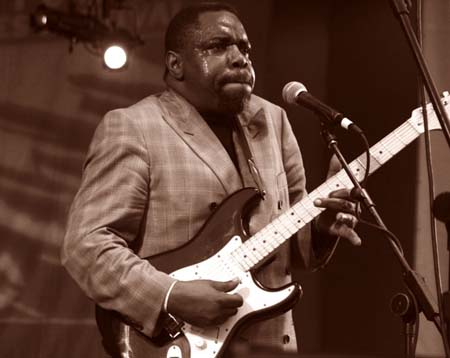
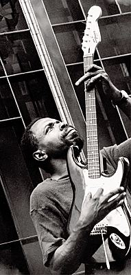

"Возможно, он самый одаренный гитарист своего поколения: эклектичный, случайный гений" - The Boston Phoenix
"Если существует чикагский блюзовый мальчик, в котором сконцентрирована блюзовая суть, то это Лурри Белл: первый гитарист Ветренного Города" - Boston Blues News
Лурри Белл (Lurrie Bell), сын знаменитого харпера Кэри Белла (Carey Bell), воспитывался в традициях чикагской блюзовой сцены с самого своего рождения в 1958 г. В шесть лет он взял в руки гитару, лежавшую в доме без применения, и самостоятельно научился играть. Лурри рос в окружении великих чикагцев и в буквальном смысле прошел блюзовую школу, где учителями и менторами были не только его отец, но и дед Lovie Lee (в прошлом пианист группы Мадди Уотерса), гитаристы Eddie Taylor, Eddie C. Campbell, Jimmy Dawkins, Eddie Clearwater, харпер Big Walter Horton, пианист Sunnnyland Slim и басист Bob Stroger.
Лурри покинул Чикаго, когда ему было 8, и до 15 лет жил в Миссисипи и Алабаме с дедом и бабкой. В это время он пел в евангелистских церквях, впитывая самоотверженную и страстную музыку госпел. После возвращения в Чикаго он собрал группу, исполнявшую соул и блюз. В первый раз Лурри вышел к публике в 16 лет. Он играл вместе с Вилли Диксоном и его группой. В 17 лет, за несколько месяцев до выпускных экзаменов, он бросил школу, чтобы играть в группе своего отца Кэри Белла. Однажды попробовав вкус блюзовой концертной жизни, Лурри уже никогда не оборачивался назад. Его мастерство и востребованность быстро растут, предложения о сотрудничестве с лидирующими блюзовыми составами Чикаго следуют одно за другим. Вскоре Лурри стали признавать восходящим музыкальным гением, отмечая его гитарное мастерство и зрелый блюзовый вокал, удивительный для человека такого возраста. О нем писали такие престижные медиа Соединенных Штатов, как Rolling Stone и New York Times.
Увы, этот вертикальный взлет был прерван душевным расстройством, настигшем Лурри Белла, когда ему было 20 с небольшим. Почти два десятилетия он ведет борьбу с недугом. Почти не получая помощи, он становится бездомным. В 90-х у него даже не было гитары. Он бродил по городу, наигрывая на губной гармонике, ночью приходил в блюзовые клубы и стоял у края сцены, надеясь, что его позовут поиграть. Обычно Лурри игнорировали или прогоняли. И все же, в эти темные годы он много раз поражал воображение случайных слушателей, извлекая из одолженной у кого-то гитары снопы изломанных музыкальных молний, прежде чем снова исчезнуть в ночи. Его видели на рынке Максвеллл-стрит, грязного и оборванного после многонедельных скитаний, играющего с уличными бэндами, и его блюзы заставляли оцепенеть завсегдатаев Максвелл. О нем рассказывали истории, которые вошли в устный эпос Чикагского блюза.
В эти трудные годы Лурри продолжали разыскивать продюссеры звукозаписывающих студий, и руководители бэндов приглашали его поработать гитаристом-сайдменом всякий раз, когда он оказывался способен делать эту работу. Как лидер-гитарист и певец, он записал пять альбомов, встреченных с немалым энтузиазмом (в том числе записи группы Sons Of Blues вместе с Billy Branch и Freddie Dixon, а также Carey and Lurrie Bell Blues Band). Круг его сотрудничества как гитариста-аккомпаниатора включает такие имена, как Koko Taylor and Her Blues Machine, Buddy Guy, Jimmy Johnson, Willie Kent, Eddie C Campbell, Son Seals Blues Band, Jimmy Dawkins Blues Band, Little Milton, Sunnyland Slim, Eddy Clearwater, Lovie Lee, Roosevelt "Booba" Barnes, Eddie Shaw and the Wolf Gang, Chydico Zydeco, A. C. Reed, Vampin' Blues Band.
В 2000 году здоровьем Лурри начинают заниматься, он получает ту профессиональную помощь, которая позволяет ему контролировать свою жизнь. Он строит свою профессиональную карьеру заново и достигает впечатляющих результатов. Обозреватели отмечают, что его техника становится более мощной и концентрированной, чем когда-либо, при полном сохранении той невероятной интенсивности, которая отличала его исполнение и в хорошие, и в трудные времена. Теперь Лурри руководит собственной группой "Lurrie C. Bell's Blues Band", и приезжает на гастроли в Европу 4-6 раз год, не считая бесчисленных клубных гигов и концертов по Штатам и участия в фестивалях. Похоже, Лурри Белл вернулся в отличной форме, и он стоит на блюзовой сцене крепко, как никогда. Сколько бы раз вы не слушали Лурри Белла, он каждый раз найдет, чем вас удивить. Он не просто находчивый и изобретательный музыкант - это слабо сказано. Каждый раз, когда он берет гитару в руки, Лурри, кажется, напрочь забывает, где находятся все мыслимые физические пределы человеческих рук и инструмента.
"...Белл отмечен интенсивным и прихотливым музыкальным воображением. Он играет с почти апокалиптической яростью, словно пытаясь прорваться через границы и создать новый музыкальный язык" - David Whiteis, блюзовый критик и жуналист.

Москва не верит ни слезам, ни смеху, ни божбе, ни маскам. Здесь публика уже кое-что знает, удивить ее непросто. Но игру такого уникального блюзмена, как Лурри Белл (Lurrie Bell), послушать стоит. Родившийся в 1958 году в Чикаго, он представляет поколение "блюзовых сыновей". Его отец - знаменитый исполнитель на губной гармонике Кэри Белл (Carey Bell). Лурри, "блюзмен по крови", взял в руки гитару в шесть лет. С детства он дышал воздухом блюза, в доме Белла-старшего часто бывали легендарные чикагские музыканты Мадди Уотерс, Эдди Тэйлор, Биг Уолтер Хортон, Эдди С. Кэмбелл, Саннилэнд Слим и Джими Доукинс. Они помогали Лурри понять блюз. И он усвоил эти уроки. В семнадцать лет Лурри Белл начал выступать на профессиональной сцене вместе с Вилли Диксоном, а в девятнадцать отправился в дорогу в составе ансамбля певицы Коко Тэйлор, в котором работал четыре года. Лурри начинают признавать как необыкновенно одаренного гитариста, владеющего множеством блюзовых стилей. О нем появляются статьи в Rolling Stone и New York Times - изданиях, нечасто балующих вниманием блюзовых музыкантов.В 70-х Белл-младший создает собственную группу Sons of Blues - вместе с контрабасистом Фредди Диксоном, сыном великого Вилли, и уникальным харпером Билли Брэнчем. В то время когда большинство молодых гитаристов (неважно, черных или белых) были зачарованы блюз-роковым стилем и образом "гитарного героя" (символами которого были Джонни Винтер и Стив Рэй Воэн), Лурри Белл держался старой традиции и развивался на ее основе. В живых выступлениях и на альбомах Лурри рельефно проступают его собственные стиль и звучание. Для него никогда не имело значения, сколько гитарных нот можно выжать за единицу времени. Лурри интересует только музыка, а точнее - блюз. Иногда это блюз странный и больной. Иногда - великолепный. И неизменно - глубокий.
Выступления Лурри Белла состоятся в клубах "Дом у дороги" (19, 20, 21 апреля) и Jazz Town (22 апреля). Мистеру Беллу аккомпанирует блюзовый квартет The Kingsize, концерты открывает московская группа "Черный Хлеб".
Алексей Аграновский,
журнал "Итоги",
номер 14 (512) от 12.04.2006